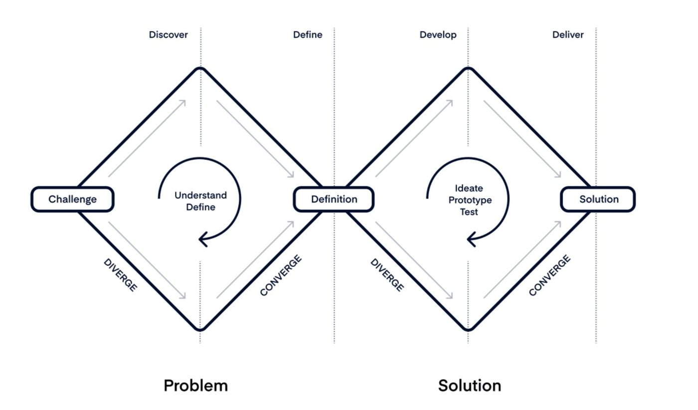
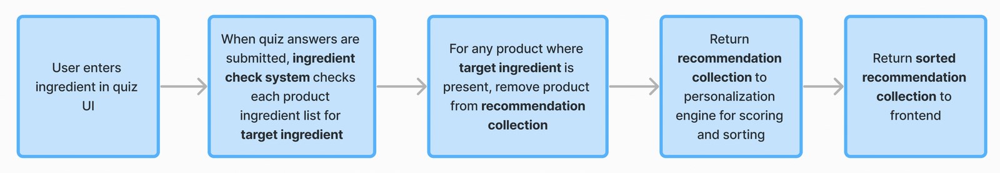
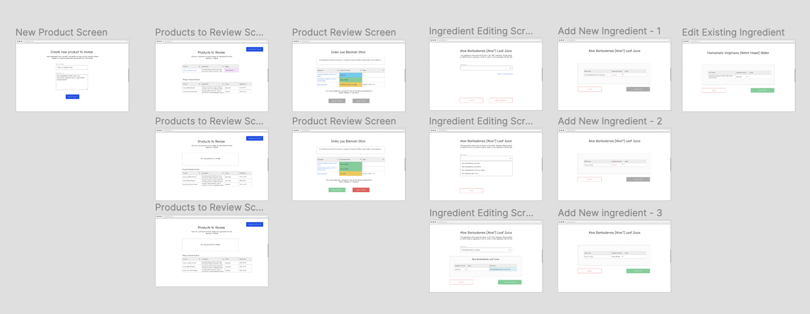
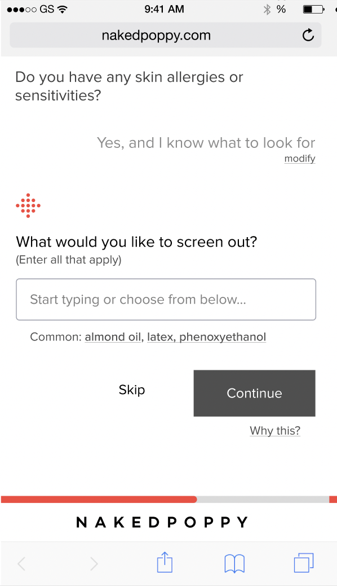
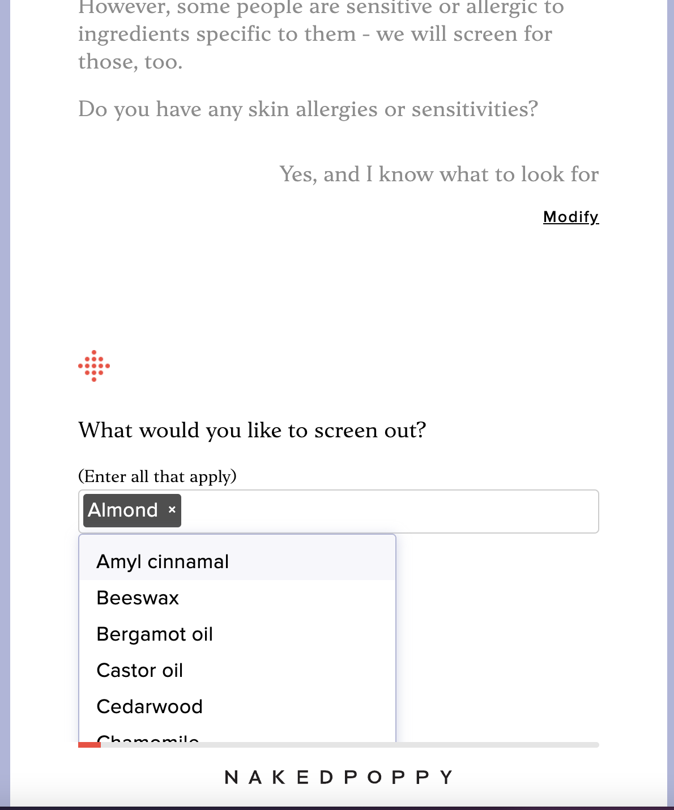
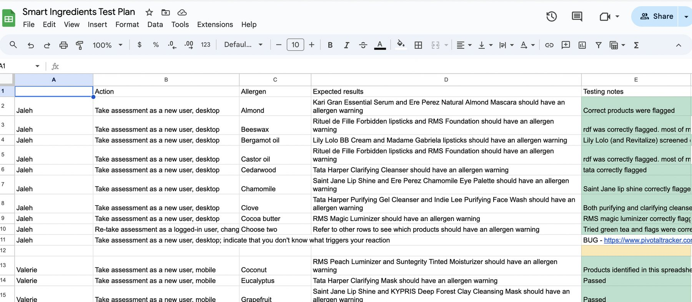
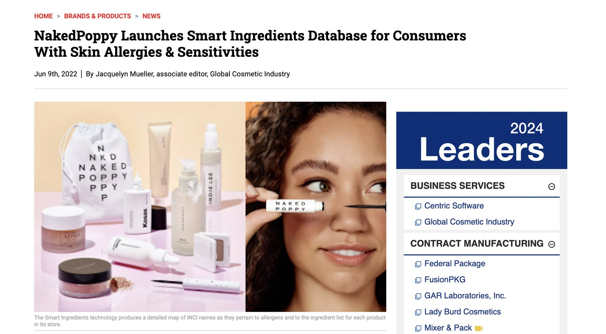

NakedPoppy · 2022 · Led discovery and definition
Smart Ingredients
Letting shoppers with skin sensitivities filter out the ingredients they react to, and shop with confidence.
- 15 in-depth interviews
- 2× sample-size SKUs
- 750+ SKUs matched
- Launched June 2022
My role
Research and synthesis, journey map and persona, competitive research, wireframes, the PRD, and the test plan. Our designer made the high-fidelity designs, and engineering designed the system architecture.
Why we built it
NakedPoppy was a direct-to-consumer clean beauty retailer, and most of our growth came from social media. Those algorithms changed constantly and were out of our control, so we needed a steadier channel, ideally one that brought us closer to our core customer: shoppers who read ingredient labels.
Wellness professionals had already been recommending us to clients switching to clean beauty. Our bet was that allergists and skincare professionals could do the same for people managing skin sensitivities, a group with a strong reason to care. To earn those referrals, the product had to let someone shop confidently without the ingredients they react to.
We followed the Double Diamond: understand the problem fully before designing a solution.

Understanding the problem
Challenge
Turn NakedPoppy into a tool people with skin sensitivities can use to shop for makeup and skincare with confidence.
Is it worth solving?
Before committing, we checked whether the problem was common and painful enough to justify building for:
- Asked our wellness partners how often ingredient-sensitive clients came up, and how severe their problems were.
- Pulled market research on how widespread ingredient sensitivity is in beauty.
- Looked for demand in our own data: search terms, customer service emails, returns, and social comments.
The answer was yes: a real problem, and one we were well placed to solve.
Who is this shopper?
Next we needed to understand the person. How do they shop today, what does it cost them, and would they pay for something better?
- Read through conversations with customers who had asked us for help with ingredient sensitivities, and followed up with interviews where they agreed.
- Ran 15 in-depth interviews with shoppers recruited through User Interviews.
I shared early findings with product (engineering, data science, and design) and with marketing. Their questions shaped the next round of interviews and research, such as which 20 ingredients cause the most irritation.
I turned the research into a journey map, a persona, and a set of real-world test cases we would later use to check the solution.
I held competitive research until after the interviews. Shoppers' own workarounds defined who the competition actually was, rather than my assumptions about it.
Ranking the friction points by how often they came up gave us three to solve:
- Every purchase means checking the label. Shoppers who know their triggers have to become ingredient experts and read every label to avoid a painful or visible reaction. That anxiety makes shopping a chore.
- They want to test before committing. Even for products they believe are safe, they prefer sample sizes or an in-store patch test.
- They check the return policy first. They only buy full-size products from retailers with a generous return policy, in case of a reaction.
Building the solution
Quick wins first
Two of the three problems needed almost no engineering, so we shipped fixes right away and started learning from them.
- More samples. Our head of inventory operations worked with suppliers to find sample sizes and sampling programs, and doubled the number of sample SKUs on the platform. More samples also lowered the risk of returns on full-size products.
- A clearer return policy. Our policy was already generous, so we named skin reactions as a valid return reason and showed it where people decide: account creation, next to Add to Cart, and at checkout. The risk was abuse, so we monitored return rates, with a plan to show the message only to shoppers with known sensitivities if needed.
Automatic label checking
Label checking was the big one, and it fit our product naturally. Shoppers already took an assessment that guided them to the right products; ingredients would be one more dimension.
As an ingredient-sensitive shopper, I want to say which ingredients I avoid, so I only see products that are safe for me.
With engineering, data science, and design, we sketched options and checked feasibility. Whatever the final interface, the core flow looked like this:

It was feasible, with one hard problem: cosmetic ingredients have no standard names. Castor Seed Oil, Castor Oil, Ricinus Communis Oil, and Seed Oils (Castor) are all the same thing, written differently by different brands.
So the feature needed a database that groups every name an ingredient goes by, to search across each product's ingredient list. Our in-house chemist would keep it current as the catalog grew past 750 SKUs, so we planned a simple interface for her instead of direct database access.
Pause to check in
This was a bigger build than the quick wins, so we stopped to check for scope creep and reassess risk, including a review with our chemist of any legal exposure around safety claims. Leadership decided an ingredient-checking system was worth the investment for an ingredient-focused company.
With the direction agreed, I wrote the PRD: success metrics, requirements, and prioritized use cases. It anchored the design iterations while engineering worked out the system's architecture.




Launch
Smart Ingredients launched in June 2022, and the trade press picked it up.
